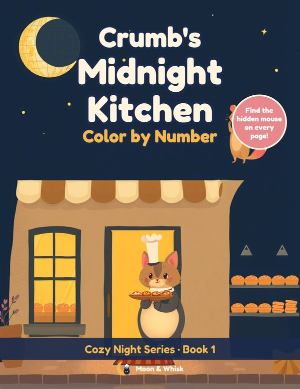
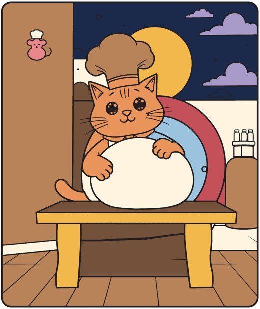
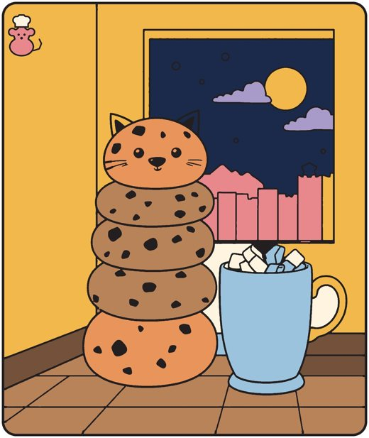
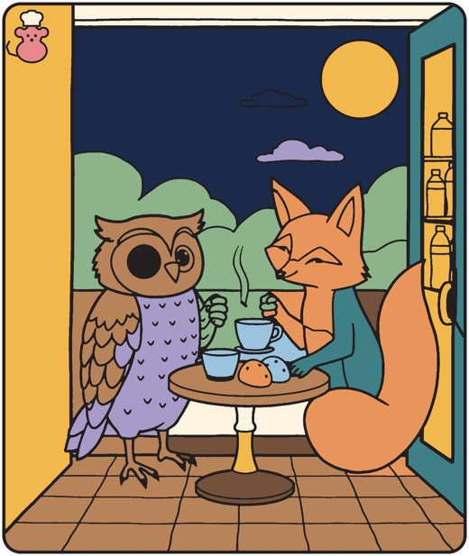

Free sample: 3 designs to print and color
Thanks for scanning! Here are three pages from Crumb's Midnight Kitchen: Color by Number, plus the full color key. Print on plain US Letter paper, match each number to its color, and look for Crumb the mouse hiding in every picture.
No sign-up, no email needed. The suggested colors below are only one way to do it.


